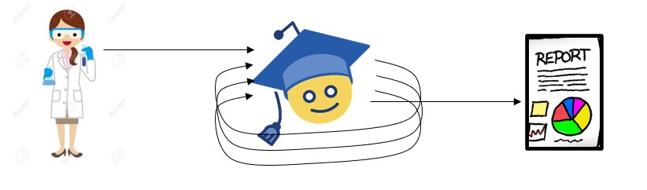
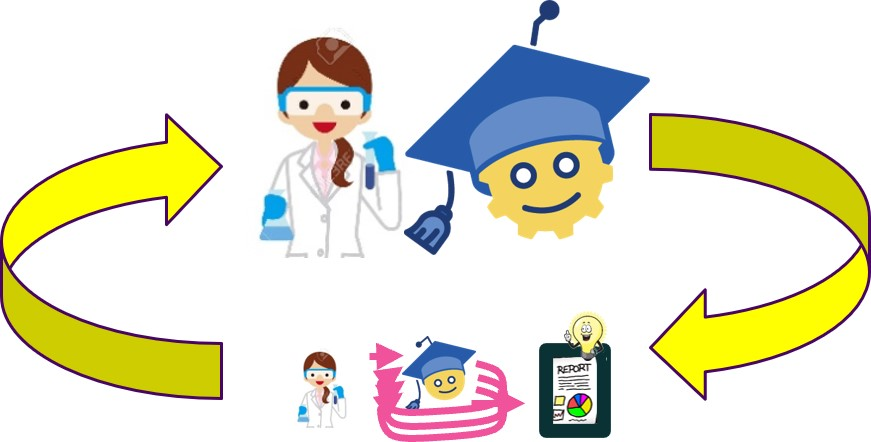
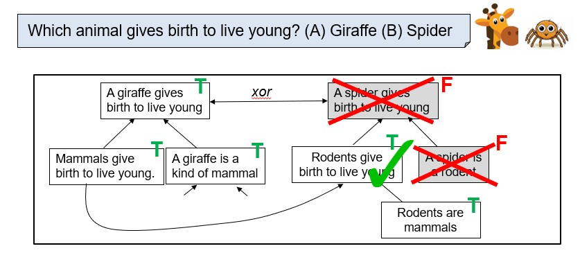
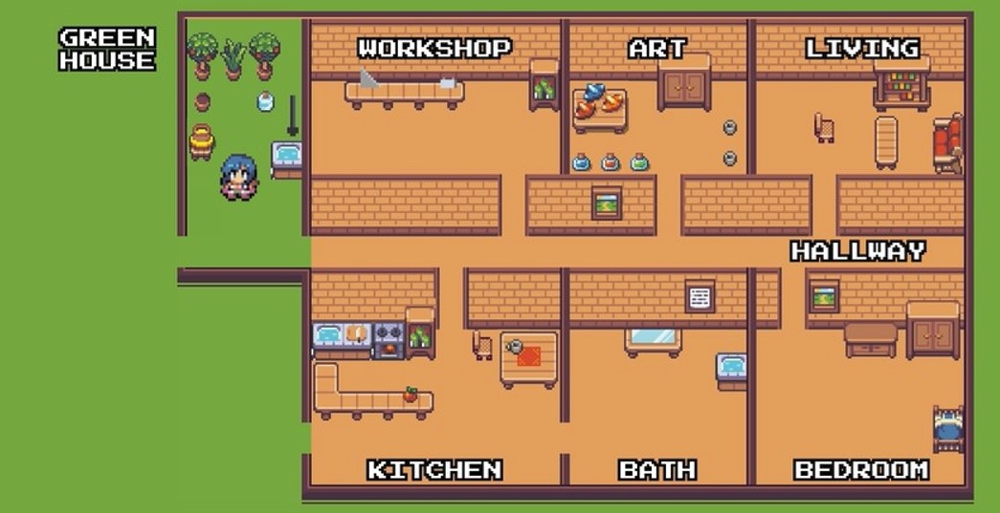

Dr. Peter Clark is a Senior Research Director and founding member of the Allen Institute for AI (AI2), and also served as Interim CEO from 2022-2023. His research spans the areas of automated scientific discovery, knowledge representation and reasoning, commonsense reasoning, and natural language understanding. He co-leads AI2's Asta Project, a large-scale initiative developing agentic frameworks for both assisted and automated scientific discovery. He received his Ph.D. in 1991 and has worked in AI for over 35 years. He has published over 250 papers, and has received several awards, including five Best Paper awards (AAAI, EMNLPx3, AKBC), a Boeing Associate Technical Fellowship (2004), and Senior Membership of AAAI.



